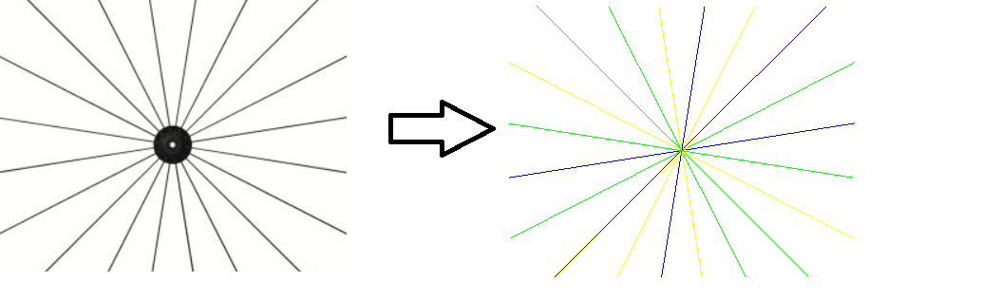
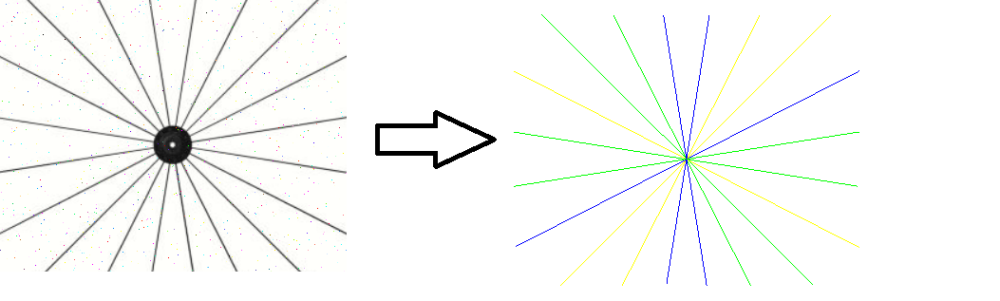

Overview
In this article we will explore how we can harness the power of the RANSAC algorithm to detect multiple lines in an image. RANAC is a robust line detection algorithm which iteratively creates line models using a subset of points. Ever model is evaluated for the total count of inlier points. An inlier is defined as a point which is within a specified threshold distance from the line. evaluates the how good the model fits This is not a detailed description of the RANSAC algorithm
Examples
A noise free image on the left and the lines detected via RANSAC on the right
Same image with some salt-pepper noise on the left and the lines detected via RANSAC on the right
An overview of RANSAC
to be done
Running RANSAC recursively
to be done
Chapter 4
to be done
Conclusion and caveats
to be done